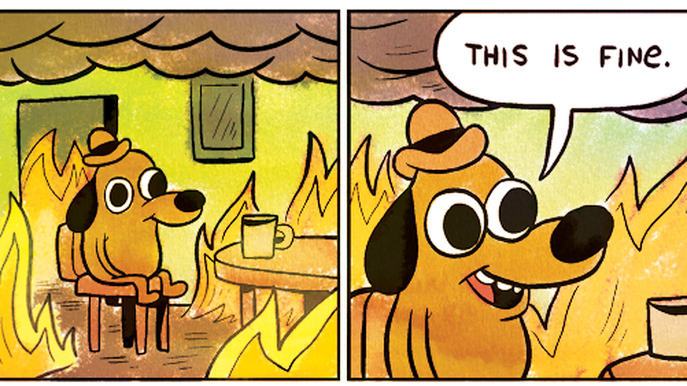
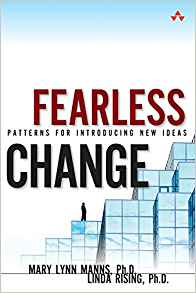

class: title-slide <div align="center" style="padding-top: 2rem;"> <p>Managing Research Software Projects</p> <h1>Next Steps</h1> <p> <img src="../files/codebender.svg" alt="logo" width="20%" /> </p> </div> --- ## A Few Gray Hairs - Jess is now 40 - Frustrated that their work isn't recognized or rewarded - Simulator has almost a thousand users worldwide, many in agriculture and local government - But their promotion still depends on research paper publications <div align="center"> <p> </p> </div> --- ## Stay the Course - Option 1: continue to suffer <div align="center"> <p>  </p> </div> - Surprising how many RSEs choose this --- ## Option 2: Raise More Funding - <https://github.com/nayafia/lemonade-stand> outlines a variety of options - You've probably already thought about all of them --- ## Option 3: Commercialization - Initial business model is a mix of: - Charging for intensive tutorials and follow-up consulting - Adding features - Using the software on others' behalf - Jess must either become an entrepreneur or find a business partner - Knows enough to avoid tech transfer offices at universities and government labs - Non-research developers encountered through open source are a better source of advice and contacts --- class: sidebar ## Do Good *and* Get Paid - Commercialization is not selling out (despite mutters from some senior colleagues) - Given the uncertainties of government funding, it is the best way to ensure the long-term survival of the simulator - And it frees up funding for projects that can't get industry support --- ## Option 4: Change the Game - Help build a community that can push for organizational change - Get involved in grant review - Spend the social capital they've earned to run for a position in their professional body - Yes, it means more committees and less time doing research... - ...but the alternative is the next generation of researchers having fewer options and opportunities <div align="center"> <p> <img src="../files/bpco.jpg" alt="Building Powerful Community Organizations cover" width="20%" />  </p> </div> --- ## Option 4: Change the Game - And yes, it's like rolling a very large rock up a very steep hill - But the social structures of research have changed many times in the last century - They're going to keep changing - You can help them change for the better --- ## Choose Your Goal - Be sure this is where you want to focus your efforts. - It's going to take years - It could well fail - There are many other things you could do --- ## Nihil Pro Nobis, Sine Nobis - Nothing about us, without us - I.e., always ask those who will be affected - Often turns up potential allies --- ## Be Specific - Few people would argue (in public) against fair hiring practices *in principle* - But the organization has to implement something *specific* - People very well might argue against those specifics - Start with whatever is likely to have broadest support - Success breeds success --- ## Power Mapping - Who has the power to make the change? - What do they care about? > Your neighbors don't make policy for your local public school: > school board trustees do, > so that's who you need to influence. - Help someone who wants the same change as you get elected - Help someone who doesn't oppose your change in exchange for support for your cause --- ## Power Mapping - Figure out who is going to be negatively impacted by the change you want and? 1. Change their mind 1. Reduce the impact 1. Make it up to them 1. Sideline them - Change doesn't have to be a zero-sum game, but it isn't purely additive either --- ## Build Alliances - "I'll help you if you'll help me" makes the world go around - Hard when people want the same thing for very different reasons - But this is *not* cynical - People whose beliefs are aligned may still have different priorities - Conversely, some people will never be your allies - If everyone wanted it, you wouldn't have to push for the change - People with a lot of social capital are particularly useful allies - But always look at how they accumulated that capital --- ## Test the Waters - Refine your idea and presentation in front of a small group - At every stage - "Refining your idea" sometimes means accepting that you wanted the wrong thing - Sometimes useful to have an official skeptic - Giving them a way to critique in private may temper their public criticism - And you just might convert them - But remember: the devil doesn't need more advocates --- ## Keep It Visible - It's easy to blog and tweet - But that same ease has reduced these channels' impact - Borrow legitimacy - Is there a newsletter you can be included in? - Can you make a presentation as part of some other event? - Can you get someone well-known to mention what you're doing? - Can you post notices in the lunchroom? The elevator? The washrooms? - Always share a single point of contact that someone checks frequently --- ## Collect Data but Tell Stories - Sooner or later someone is going to ask what financial impact this change is going to have - Be ready for that - But data isn't as powerful as stories - Don't explain what kind of people this will help - Explain how it helped (or would help) a specific person - "If you've never cried when telling that story, tell a better story." --- ## Mark the Seasons - Burnout is an occupational hazard for everyone trying to make meaningful change - In part because we get used to doing things on our own - And don't share the load even when we can - "Celebrate when you can, grieve when you need to." - Not all of your allies will become your friends - But those who do will be able to share your victories and commiserate with your defeats like no one else --- class: sidebar ## Two Modest Requests - Please decline to take part in conferences that don't support fully-remote participation [<a href="../bibliography/#Skiles2021">Skiles2021</a>]. - Please ask leadership candidates in your professional society: 1. What steps will you take in your first year in office to ensure that less affluent researchers have an equal opportunity to publish their work? 1. What specific changes will you make to grant and promotion review procedures to ensure that computational work is properly rewarded? 1. What specific curriculum guideline changes will you recommend to ensure that the next generation of researchers are properly prepared to engage in computational work? --- ## A Bit More Advice - <a href="../advice/being-fired/">Being Fired</a> - <a href="../advice/findability/">Findability</a> - <a href="../advice/moving-on/">Moving On</a> - <a href="../advice/partnership/">Partnership</a> - <a href="../advice/persuasion/">Persuasion</a> - <a href="../advice/safety/">Safety</a> <div align="center"> <p> But please read <a href="https://techworkerhandbook.org/">The Tech Worker Handbook</a> </p> <p style="background-color: #809aae;">  </p> </div> --- class: exercise ## Those Emails 1. Replace one of the questions on the previous slide with a better one. 1. Send those emails. --- <div align="center" style="padding-top: 2rem;"> <p>Managing Research Software Projects</p> <h1>Thank You</h1> <p> <img src="../files/codebender.svg" alt="Codebender logo" width="20%" /> </p> <p> <a href="https://third-bit.com/">https://third-bit.com</a> | <a href="mailto:gvwilson@third-bit.com">gvwilson@third-bit.com</a> </p> <p> <em> Start where you are<br/> Use what you have<br/> Help who you can </em> </p> </div>